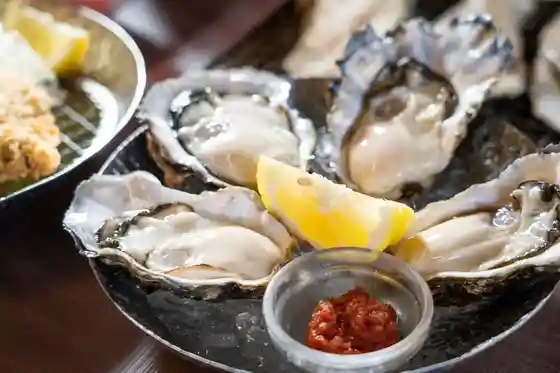
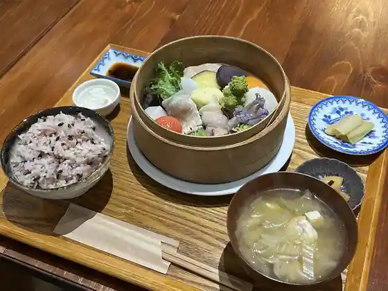
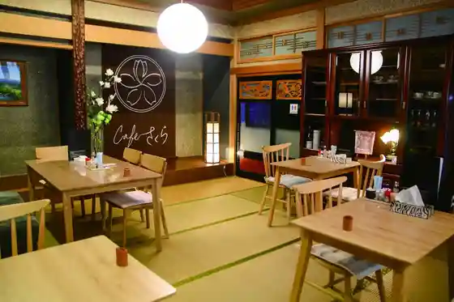
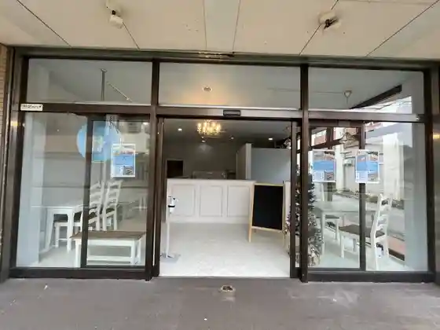

Nyuzen Kaki no Hoshi
Nyuzen, Toyama · 0765-76-0065 · Official / source link

Kafe (Yasaito Etosetora) Kafe (Yasaitoetosetora)
Nyuzen, Toyama · Official / source link

Cafe Sakura
Nyuzen, Toyama · 080-6207-8358 · Official / source link

Kurepu Mise D258
Nyuzen, Toyama · 070-3208-2511 · Official / source link

Chugoku Cha Kafe Tsuya -en- Chugokuchakafe En
Nyuzen, Toyama · Official / source link
Nyuzen Kaiyo Shinso Mizu Park Nyuzenkaiyoshinsosui Park
Nyuzen, Toyama · 0765-72-3803 · Official / source link
Nyuzen Hama Marushie
Nyuzen, Toyama · 0765-76-9100 · Official / source link
Nyuzen Kanko Bussan Kyokai (Nyuzen Machinaka Koryu Shisetsu Uruoi Kan 1F)
Nyuzen, Toyama · 0765-72-0330 · Official / source link
Kannon Yu
Nyuzen, Toyama · 0765-74-1126 · Official / source link
Nyuzen Niaru Sono Ie Sakyu no Itto Sankakuten
Nyuzen, Toyama · 0765-72-3802 · Official / source link
Sakaba Otojiro
Nyuzen, Toyama · 0765-74-2383 · Official / source link
Takase Yusui no Niwa
Nyuzen, Toyama · 0765-72-3802 · Official / source link
Mizu no Komichi
Nyuzen, Toyama · 0765-72-3837 · Official / source link
Gezan Hatsudensho Art Museum De Shiru Mizu no Rekishi & Baden Ashita O Shokuji Puran (Nyuzen) Nizayamahatsudenshobijutsukandeshirumizu no Rekishi & Baden'akebioshokujipuran
Nyuzen, Toyama · 0765-72-0330 · Official / source link
Nabigetoshiata & Komono Tezukuri Experience (Nyuzen) Tezukuritaiken !
Nyuzen, Toyama · 0765-72-0330 · Official / source link
Gezan Hatsudensho Art Museum Gaido (Nyuzen)
Nyuzen, Toyama · 0765-72-0330 · Official / source link
Gezan Geijutsu Forest Hatsudensho Art Museum
Nyuzen, Toyama · 0765-78-0621 · Official / source link
Nyuzen Kannon Festival
Nyuzen, Toyama · 0765-72-3802 · Official / source link
Nyuzen Yojo Furyokuhatsuden Kengaku Kyukeijo
Nyuzen, Toyama · 0765-72-3802 · Official / source link
Baden Ashita Baden Akebi
Nyuzen, Toyama · 0765-78-2525 · Official / source link
Jobe no Ma Iseki
Nyuzen, Toyama · 0765-72-3858 · Official / source link
Funami Joshi Kan
Nyuzen, Toyama · 0765-78-2730 · Official / source link
GRATINER Gurachine
Nyuzen, Toyama · 0765-32-5521 · Official / source link
Fu Tsuri Yama
Nyuzen, Toyama · 0765-72-3802 · Official / source link
Nakao Yama Jusan Tera
Nyuzen, Toyama · 0765-72-3858 · Official / source link
Chat noir Sha no Waru
Nyuzen, Toyama · 0765-74-2772 · Official / source link
Bishoku Kurabu Gen Ki Bishokukurabu Genki
Nyuzen, Toyama · 0765-72-3585 · Official / source link
Etsu Koshi
Nyuzen, Toyama · 0765-74-0040 · Official / source link
Washoku Tokoro Chiku Mae
Nyuzen, Toyama · 0765-74-0123 · Official / source link
Shokusai Kanteki Ie
Nyuzen, Toyama · 0765-72-3220 · Official / source link
Sanpei
Nyuzen, Toyama · 0765-72-0047 · Official / source link
Agurigorudo Yagi Agurigorudo Yagi
Nyuzen, Toyama · 0765-72-1576 · Official / source link
Maku Hotel Maku Hotel
Nyuzen, Toyama · 0765-72-5500 · Official / source link
Kashihara Kan
Nyuzen, Toyama · 0765-72-0453 · Official / source link
Funami no Yu Fureai Onsen
Nyuzen, Toyama · 0765-78-1935 · Official / source link
Aisai Plaza
Nyuzen, Toyama · 0765-72-1192 · Official / source link
Kosumo 21 Kosumo 21
Nyuzen, Toyama · 0765-74-9100 · Official / source link
Seihachi Ro
Nyuzen, Toyama · 0765-72-1108 · Official / source link
Kafe TIME Kafetaimu
Nyuzen, Toyama · 0765-72-0051 · Official / source link
Dainingu uru Daininguru
Nyuzen, Toyama · 0765-88-9060 · Official / source link
Yonezawa Memorial Museum
Nyuzen, Toyama · 0765-72-3858 · Official / source link
Basho Kinenhi
Nyuzen, Toyama · 0765-72-3858 · Official / source link
Kuraimingujimu FCS Uoru Kuraimingujimu FCS Uoru
Nyuzen, Toyama · 090-3760-1058 · Official / source link
Yama no Honjin
Nyuzen, Toyama · 0765-78-2730 · Official / source link
Fune Kawa Dam
Nyuzen, Toyama · 0765-72-3826 · Official / source link
Nyuzen Sogo Gym
Nyuzen, Toyama · 0765-74-2500 · Official / source link
Aono Nature Park Park Gorufu Ba Ao no Shizenkoen Park Gorufu Jo
Nyuzen, Toyama · 0765-72-3837 · Official / source link
Okunai Tamokuteki Shisetsu Wakuwaku Domu Yanaitamokutekishisetsuwakuwaku Domu
Nyuzen, Toyama · 0765-72-3856 · Official / source link
Haka no Ki Nature Park
Nyuzen, Toyama · 0765-72-3837 · Official / source link
Kurobegawa Teibo Sakurazutsumi
Nyuzen, Toyama · 0765-72-3837 · Official / source link
Fuji Honai Shrine
Nyuzen, Toyama · 0765-72-3858 · Official / source link
Sono Ieyama Campground
Nyuzen, Toyama · 0765-72-2788 · Official / source link
Sugisawa no Sawa Sugi Sugisawa no Sawa Sugi
Nyuzen, Toyama · 0765-72-1710 · Official / source link
Nyuzen Tami Hall (Kosumohoru) Nyuzenchominkaikan (Kosumohoru)
Nyuzen, Toyama · 0765-72-1105 · Official / source link
Nyuzen Town Hall
Nyuzen, Toyama · 0765-72-1100 · Official / source link